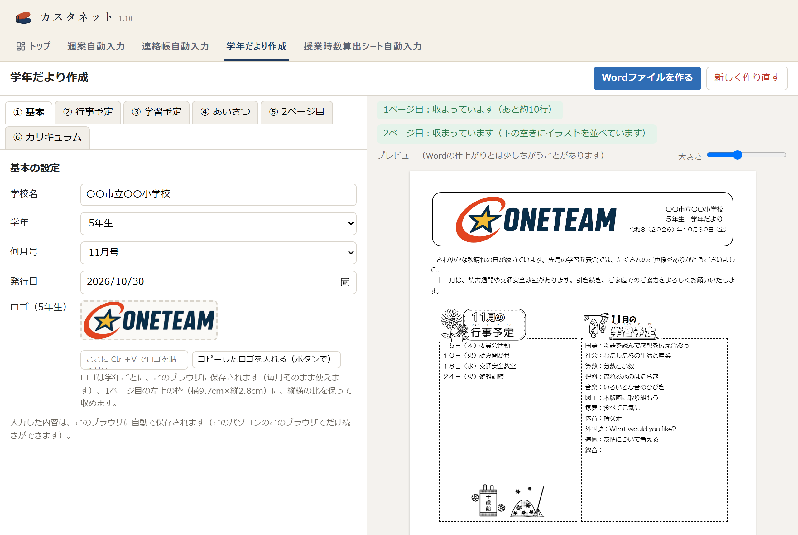

カスタネット
詳細ガイド
「かんたんガイド」で分からなかった操作を、少しくわしく書いたものです。必要なところだけ読んでください。
開くところ
https://sportfcshimamoto-svg.github.io/gakunen-dayori/oshigoto/
EdgeかChromeで開きます。トップのタイルを押すと、それぞれのページが開きます。どのページも、上のタブで行き来できます。
このガイドの中身
| ページ | 使う回数 | ページ |
|---|
| 学年だより作成（入力・Word） | 毎月 | 2 |
| 学年だより作成（写真・イラスト） | 毎月 | 3 |
| 週案自動入力 | はじめに1回 | 4 |
| 連絡帳自動入力 | はじめに1回 | 5 |
| 授業時数算出シート自動入力・困ったとき | 年に2〜3回 | 6 |
新しくなったのに画面が変わらないとき左上の「カスタネット」の横の数字（例：1.10）がバージョンです。数字が古いままなら、Ctrl＋F5で読み直します。
必ず守ること
- 使うのは、自分に割り当てられた校務用パソコンだけにします。
- 生成AIには、子どもの名前など、個人が分かることを入れません。写真も渡しません。
- 週案・行事予定のリンクは、校内の先生にだけ伝えます。
- 入力した内容や写真は、このパソコンのブラウザの中だけに保存します。インターネットには送りません。
学年だより作成：入力とWord
毎月

左のタブを①から順に入れます。右に仕上がりの見本が出ます。入力は自動で保存され、同じパソコンの同じブラウザで続きができます。
| ① 基本 | 学年・何月号・発行日を選びます。ロゴは、はじめに1回だけ、ロゴの画像を開いて Ctrl＋C → ロゴの欄をクリックして Ctrl＋V。 |
|---|
| ② 行事予定 | 行事予定のGoogleスプレッドシートのリンクを貼り、「スプレッドシートから読み込む」。次からはボタンだけです。チェックが付いた行事が載ります。文字はその場で直せます。
読み込めないとき：シートの共有を「リンクを知っている全員・閲覧者」にします。 |
|---|
| ⑥ カリキュラム | はじめに1回。カリキュラムをWordなどで開き、表の全体を選んで Ctrl＋C → ⑥の欄で Ctrl＋V。うまくいかないときは「コピーした表を読み込む（ボタンで）」。 |
|---|
| ③ 学習予定 | 「カリキュラムから〇月の分を入れる」を押すと、その月の項目が原文のまま入ります。道徳・総合などは手で書きます。 |
|---|
④ あいさつ
⑤ 記事 | 「AIで文章を作る」を開き、メモを書く →「お願いの文をコピー」→ 開いたAIに Ctrl＋V で送る → 返事をコピーして貼り、「この文章を入れる」。最後は自分の言葉に直します。 |
|---|
| Wordを作る | 右上の「Wordファイルを作る」。気になるところがあると知らせが出ます（「このまま作る」でも作れます）。できたWordを開いて、2ページに収まっているかを確かめます。 |
|---|
学年だより作成：写真・イラスト
毎月
学校のパソコンではファイルを選ぶ画面が止められているので、フォルダか貼り付けで入れます。写真はこのパソコンの中だけに保存され、Wordでは白黒になります。
写真をフォルダからまとめて入れる（おすすめ）
- デスクトップなどに「学年だより写真」フォルダを作り、その中に行事の名前のフォルダ（「林間」「音楽会」など）を作って写真を入れます。
- ⑤で記事を作り、見出しに行事の名前を入れておきます（例：「林間学校にいってきました」）。
- ⑤の「📁 フォルダから写真を読み込む」で、最初の1回だけ「フォルダを選ぶ」→「学年だより写真」を選びます。次からは「写真を読み込む」を押すだけです。
見出しと名前が合う記事に写真が入ります。合う記事がないフォルダは読みません。
写真を1枚ずつ入れる
写真を開いて Ctrl＋C → 記事の下の「ここに Ctrl＋V で写真を貼り付け」をクリックして Ctrl＋V。うまくいかないときは「コピーした写真を入れる（ボタンで）」。
イラスト
- 「学年だよりイラスト」フォルダの中に「12月」のような月のフォルダを作り、絵を入れます。
- ⑤の「🎨 〇月のイラスト」で、最初の1回だけ「フォルダを選ぶ」。次からは「イラストを読み込む」。
2ページ目の空いているところ（見出しの横・記事の終わり・下の空き）に自動で入ります。最初から入っている小さい絵もあるので、使わなくてもかまいません。
消す・戻す
| 写真・絵を消す | 写真や絵をクリック（確認は出ません） |
|---|
| まちがえて消した | フォルダの写真 →「写真を読み込む」をもう一度（消した分だけ戻ります）
貼り付けた写真 → もう一度コピーして貼り付け
絵 →「イラストを読み込む」をもう一度 |
|---|
| 月が変わったとき | 前の月の記事の写真は自動で消えます（ロゴ・イラストは残ります） |
|---|
週案自動入力
はじめに1回
週案（Googleスプレッドシート）に「週案」のメニューを入れます。入れたあとは、週案の中で週のタブがまとめて作れます。
はじめに1回：メニューを入れる
- カスタネットの「週案自動入力」で「プログラムをコピー」を押します。
- 週案を開き、「拡張機能」→「Apps Script」。真ん中の文字をクリックし、Ctrl＋A → Delete で消して、Ctrl＋V で貼り、💾（保存）。
- 上の「▶ 実行」の右の欄を「onOpen」にして「▶ 実行」。
- 「承認が必要です」→「権限を確認」→ 自分のアカウント →（「確認されていません」と出たら「詳細」→「移動」）→「許可」。
- 週案にもどると、上のメニューに「週案」が出ます。
「承認」で止められたとき学校のアカウントの設定で止められています。担当の先生に相談してください。
使う：週のタブを作る
- メニュー「週案」→「週のタブを作る」。右にパネルが出ます。
- 組ごとに時間割を貼ります（週案が覚えるので、次からは貼らなくてよい）。
- 期間を選び、「週のタブを作る」。
日付は「1月4日」の形で入ります。祝日はグレーになり、教科は入りません（夏休みなど学校の休みは自分でグレーに）。算数の下に「分割」を入れるかは、パネルのチェックで選べます。
ほかの学年の週案は、はじめに1回、メニュー「週案」→「5年生の形にそろえる（宿題・音・連の行）」を押すと、そのまま使えます（組の見出し・タブの名前・宿題と音・連の行がそろいます）。
連絡帳自動入力
はじめに1回
週案とつないでおくと、週案を直すだけで、連絡帳の時間割・宿題・決まった持ち物が自動で直ります。
はじめに1回
- カスタネットの「連絡帳自動入力」で「プログラムをコピー」。
- 連絡帳を開き、週案のときと同じように「拡張機能」→「Apps Script」に貼って保存 →「onOpen」を実行して許可。メニューに「連絡帳」が出ます。
- メニュー「連絡帳」→「はじめに：週案をつなぐ」。週案のリンク（週案を開いたときの上のアドレス）を貼って「OK」。もう一度「許可」を聞かれたら許可します。
- 「設定」の画面で、自分の学年のふだんの時間数・下校時刻・持ち物を入れて「保存する」。
週案と連絡帳は、5年生の形をコピーして使います。連絡帳の「5-1」「5-2」の列に、週案の1組・2組から書きます。
自動で書くもの・先生が書くもの
| 時 | 次の日の時間割。ふだんと変わったところだけ（例：火曜 ①体育 それ以外通り）と、早く帰る日の下校時刻 |
|---|
| し | 週案の「宿題」の行 |
|---|
| 持 | 決まった持ち物（月曜セット・体そう服など）。絵の具セットなどは先生が書く |
|---|
| 連 | 先生が書く |
|---|
直したときの決まり
- 週案を直すと、数秒〜10分で連絡帳に出ます。週案に新しい週のタブを作ると、連絡帳にもできます。
- 連絡帳で手で直したマスは、そのあと週案を直してもずっと残ります（手入力が優先）。手で直していないマスは、週案に合わせて自動で直ります。
- 過ぎた日は書きかえません。祝日・グレーの日は「時」に「敬老の日」などと書きます。
- メニュー「連絡帳」→「週案から自動入力」は、全部を週案に合わせたいときだけ押します（手で直したところも戻ります）。
授業時数算出シート自動入力
年に2〜3回
週案の教科を、授業時数算出シート（Excel）にコピーして1回で貼ります。
- 週案を読み込む：週案のリンクを貼って「読み込む」（共有は「リンクを知っている全員・閲覧者」）。次からは、開くと自動で読み込みます。
- 組と週を選ぶ：最初の週から最後の週までを選びます。
- 入る文字を確かめる：赤いマスは、教科が分からなかったところです。教科を選びます（「入れない」もできます）。
- 「時数表用にコピー」→ Excelで、選んだ最初の週の行の、月曜日「モジュール」のマスをクリックして Ctrl＋V。
週案にない週（夏休み・冬休み）は空のまま貼ります。
困ったとき
- 画面が古いまま・新しい機能が出ない
- Ctrl＋F5で読み直します。更新の直後は10分ほど待ちます。
- 週案・連絡帳にメニューが出ない
- スプレッドシートを読み直します（F5）。出なければ、Apps Scriptで「onOpen」を実行して許可したかを確かめます。
- 学年だよりが「はみ出しています」
- 文を短くする、写真を減らす・小さくする、で調整します。
- 学年だよりの続きが出てこない
- 入力は、そのパソコンのそのブラウザにだけ保存されています。同じパソコン・同じブラウザで開きます。
- Excelに貼ったら、ずれた
- Ctrl＋Zでもどし、最初の週の行の、月曜日「モジュール」のマスに貼り直します。
問い合わせ先校内の担当：＿＿＿＿＿＿＿＿＿＿＿＿＿＿